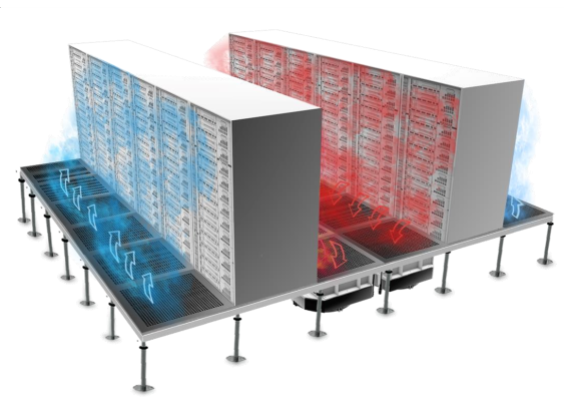

Acerca de nosotros
Somos una entidad dedicada a la formacion y distribución de informacion acerca de Data centers, con mas de 12 años de experiencia en el mercado te invitamos a recibir nuestro newsletter semanal anotandote a nuestro formulario, o si prefieres solo mirar adelante, te dejamos en la seccion de imagenes un monton de fotos para que disfrutes de la experiencia, ¡que te diviertas!

Informacion adicional
Así es como funciona el normal flujo de aire de un datacenter
¿pero que pasa cuando el flujo se obstruye?
Como nos muestra la imagen de arriba se presentan puntos calientes, es por eso que es muy importante en un data center siempre tener en cuenta el buen manejo de flujo, para saber como puedes hacer para evitar estos problemas de flujo, suscribete a nuestro newsletter donde podrás ver mas contenido y soluciones especificas